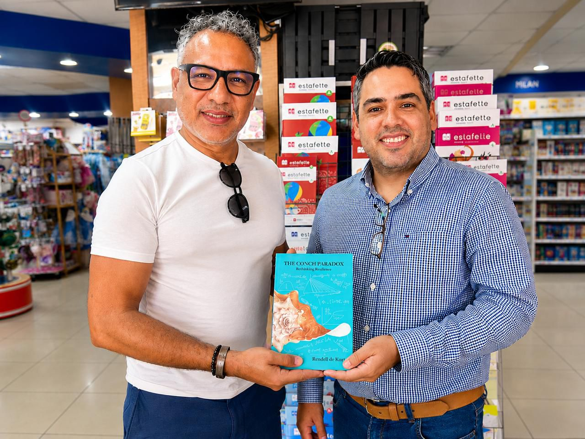
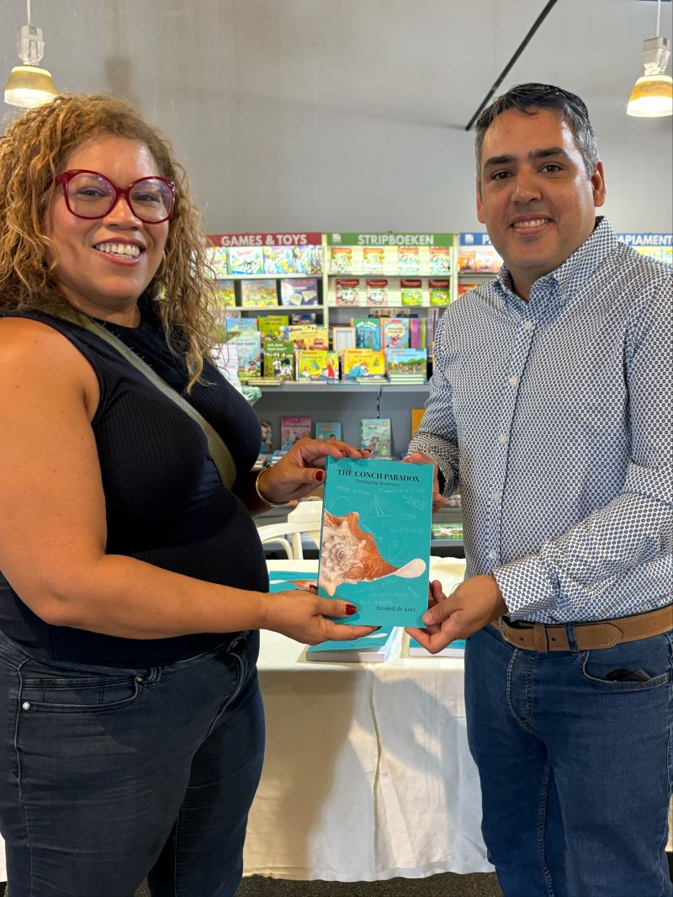
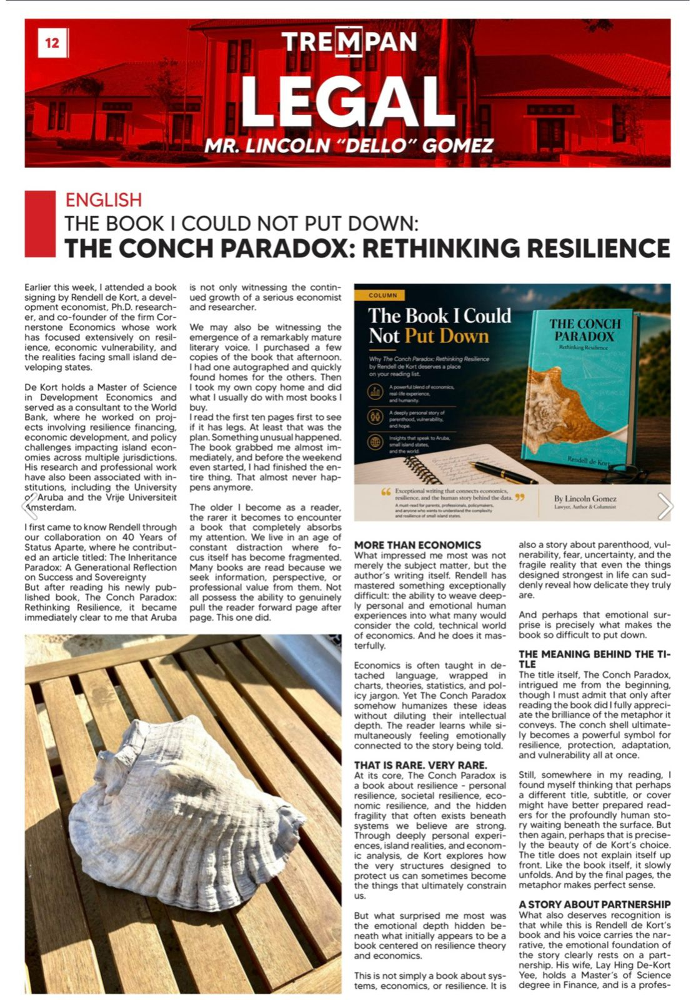

Reviews, columns, and coverage
Selected coverage of The Conch Paradox: Rethinking Resilience since publication in March 2026. Includes the Lincoln Gomez literary feature, a reader reflection by educator Jessica Besselink, Trempan newspaper coverage, the aruba.nu news feature by NOS Caribbean correspondent Dick Drayer, the Bati Bleki column in When in Aruba, the Hit 94 FM radio reflection by Stanley Dabian, and earlier framing in the World Economic Forum agenda.

With Lincoln D. Gomez at the De Wit & Van Dorp signing, 20 May 2026.
Lincoln D. Gomez · #YourFavoriteLawyer LinkedIn newsletter · also in Trempan (LEGAL column, p. 12) · 24 May 2026
"Aruba may have gained not only a respected economist and policy thinker, but also a remarkably mature literary voice capable of contributing meaningfully to conversations far beyond our shores."
"Rendell has mastered something exceptionally difficult: the ability to weave deeply personal and emotional human experiences into what many would consider the cold, technical world of economics. Humanizes these ideas without diluting their intellectual depth. That is rare. Very rare."
"Buy it because it will move you. Buy it because if you are someone who keeps a stack of books beside your bed every year, this is one that belongs on that stack."Read full review on LinkedIn →

With Jessica Besselink at the book signing.
Jessica Besselink, MBA · Project Officer, HopeAruba Movement · LinkedIn · June 2026
"What I admired most was his ability to connect the deeply personal with the systemic. Through a family crisis, he explores larger questions about resilience, expertise, culture, identity, and the institutions we build around ourselves."
"I also appreciated how economic principles were explained through real-life situations rather than abstract theory. Complex concepts became accessible because they were attached to lived experience."
"Some books entertain, others linger. This one continues to invite reflection, and I believe many readers will come away with a deeper understanding than they started with."Read the full review on LinkedIn →

Trempan, LEGAL column, p. 12, 24 May 2026.
Lincoln "Dello" Gomez · Trempan (Aruban newspaper) · 24 May 2026
The Lincoln Gomez review ran simultaneously in his LinkedIn newsletter and in the Aruban newspaper Trempan as a two-page LEGAL column feature, with the English review on the left and a Papiamento companion column on the right. The print placement gives the review reach into Papiamento-language readership beyond the English LinkedIn audience.
Stanley Dabian (Sthanlux) · Cita cu Morgan y Stanley, Hit 94 FM · 23 May 2026
After Rendell appeared on the Cita cu Morgan y Stanley radio show on Saturday 23 May 2026, host Stanley Dabian shared a Papiamento Refleho di Dia taking the conch (e Calco) as the central symbol, building a meditation on voice, leadership, communication, and identity. Co-hosts: Davina Habibe, Morgan Arrindell, Briian Urquiiza.
"Bo Calco ta bo talento. Bo vision. Bo liderazgo. Bo mensahe pa mundo. ... Ora bo habri bo mes, bo bos y energia por alcansa/yega masha leu mes."Watch the full recording on Facebook →
Dick Drayer · aruba.nu · 27 May 2026
"The Conch Paradox: Rethinking Resilience van de Arubaanse econoom en onderzoeker Rendell de Kort begint opvallend veel aandacht te trekken binnen intellectuele en maatschappelijke kringen op Aruba."
aruba.nu picks up the Lincoln Gomez review, summarising the book's thesis on resilience, its relevance for small island economies under climate and tourism pressure, and Gomez's framing of The Conch Paradox as a marker of Aruba's emerging orange economy — creativity, knowledge, and intellectual property as engines of small-island development.
Read on aruba.nu →Featured in Rona Coster's Bati Bleki column · When in Aruba · 24 November 2025
Featured in Rona Coster's Bati Bleki weekly column, written by Rendell in Rona's voice and published with her blessing as a pre-launch introduction to the book's central idea. Walks readers from the queen conch's shell to Malcolm Gladwell's David and Goliath to Aruba's tourism dependency, and closes with the question: "What's your conch shell?"
Read on When in Aruba →World Economic Forum Agenda · February 2026
WEF Agenda piece by Rendell that frames the conch paradox as a critique of mainstream resilience thinking, with the queen conch as the lens for understanding how protection becomes constraint.
Read on weforum.org →Reviews, interviews, podcast appearances, speaking invitations.